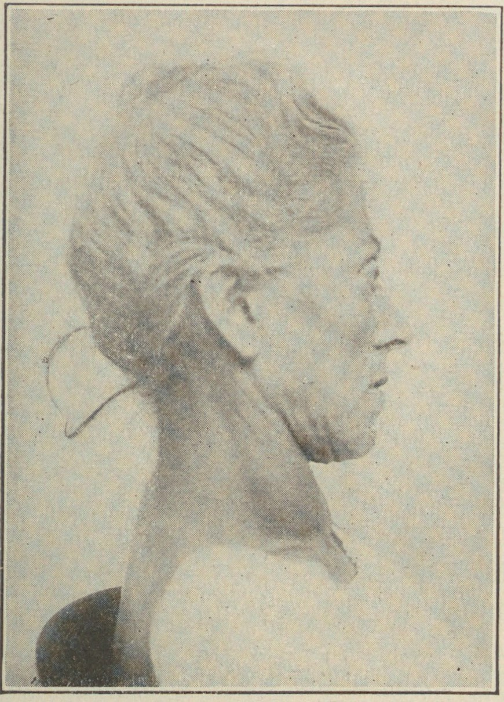
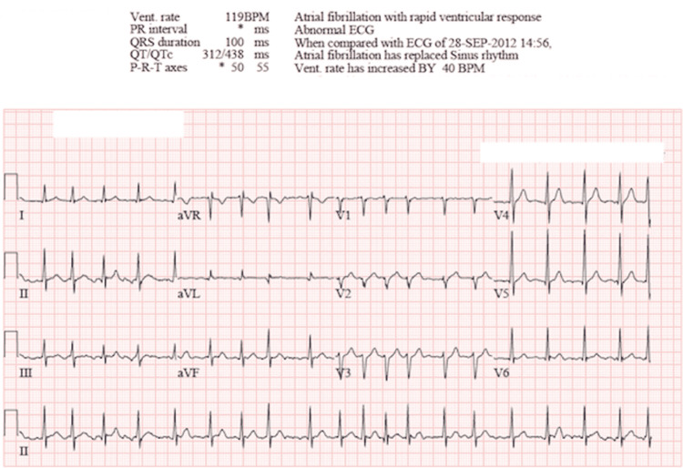
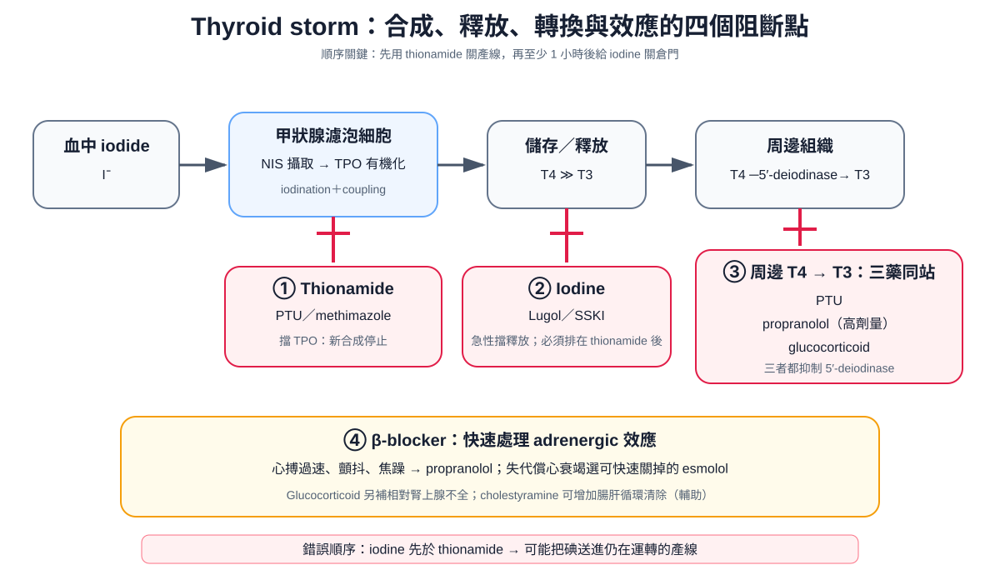

疾病內分泌
Thyroid storm ｜ 甲狀腺風暴 · 甲狀腺毒症危象
筆記更新 2026-07-28·整理狀態：可用
其他名稱 6
Thyroid storm · 甲狀腺風暴 · 甲狀腺危象 · Thyrotoxic crisis · 甲狀腺毒症危象 · Thyrotoxic storm
定義與誘因
| 項目 |
重點 |
| 本質 |
thyrotoxicosis 的極端終點：荷爾蒙過量 ＋ 誘因 → 兒茶酚胺受體上調與增敏 → 產熱、心臟、中樞神經同時撐不住 |
| 好發族群 |
未診斷、或治療不規則／自行停藥的 Graves disease↗ 病人；其次為毒性結節、甲狀腺炎、外源性甲狀腺素過量；老年人可能以 apathetic 型呈現 |
| 死亡率 |
即使治療，住院死亡率仍約 10%（日本全國 ~10%、教科書 10–25%；美國住院資料庫 2004–2013 為 1.2–3.6%，各國差距大）——內科少數「診斷慢一步就會死」的病 |
| 誘因（找不到就不算處理完） |
感染（最常見：Pneumonia、泌尿道感染、敗血症）｜手術／麻醉（甲狀腺與非甲狀腺手術都算）｜碘負荷（含碘顯影劑 CT、amiodarone、優碘、海帶）｜放射碘後 1–2 週｜自行停 thionamide（門診最常見，問診一定要問）｜生產、外傷、DKA、ACS |
flowchart TD
A["既有甲狀腺毒症（多為 Graves）＋誘因<br/>感染・手術・碘負荷・停藥・生產"] --> B["游離 T3／T4 湧出<br/>兒茶酚胺受體上調與增敏"]
B --> C["產熱＞散熱：高燒、大汗、脫水<br/>心率與心搏量↑、心房顫動"]
C --> D["多器官同時失代償<br/>＝ 甲狀腺風暴（分界不是數值）"]
筆記中的流程與關係臨床表現與診斷
| Graves 外觀 |
Atrial fibrillation with RVR |
 |
 |
| exophthalmic goiter：瀰漫性甲狀腺腫合併突眼 |
12 導程 ECG：無固定 P 波、RR irregularly irregular，ventricular rate >100/min |
左圖：Cabot, Physical Diagnosis, 1923（Wikimedia Commons，public domain）；右圖：McGuire et al., Cureus 2022, Figure 1（PubMed，CC BY 4.0）。

Thyroid storm 的四個阻斷點：thionamide 擋 TPO 合成、iodine 擋釋放、PTU／propranolol／glucocorticoid 三者同時擋周邊 T4→T3，β-blocker 另快速壓住 adrenergic 效應。自製示意圖。
鑑別診斷
| 要排除的 |
支持它的線索 |
怎麼分開 |
| Sepsis↗ |
感染灶明確、低血壓、白血球左移、乳酸高。兩者可以同時存在——感染正是最常見誘因 |
甲狀腺功能；但懷疑就兩邊一起治，不要二選一 |
| Malignant hyperthermia↗ |
吸入性麻醉劑或 succinylcholine 後數十分鐘–數小時、肌肉僵直、呼氣末 CO₂ 暴增、橫紋肌溶解 |
靠用藥時序；治療完全不同：dantrolene ＋ 停麻醉劑 |
| Neuroleptic malignant syndrome↗ |
抗精神病藥史、鉛管樣僵直、CK 極高、自律神經不穩但沒有高動力循環 |
用藥史 ＋ CK ＋ 甲狀腺功能 |
| 抗膽鹼中毒 |
皮膚乾熱、完全不出汗、瞳孔放大、尿滯留、腸音消失、譫妄 |
關鍵在排汗：風暴大汗淋漓，抗膽鹼乾得像骨頭 |
治療
| 順序 |
打在產線哪一站 |
藥 |
為什麼是它 |
| ① |
合成（TPO） |
PTU（危象首選）；不能用時改 methimazole (MMI) |
PTU 比 MMI 多一個作用：同時抑制周邊 T4→T3 轉換，數小時內就把 T3 拉下來 |
| ② 至少晚 1 小時 |
釋放 |
Lugol's solution 或 SSKI |
Wolff–Chaikoff：降 T4 最快的一步，但約 10 天 escape，只能短期用 |
| ③ |
標的器官 ＋ 周邊轉換 |
Propranolol；血行動力不穩或失代償心衰竭改 esmolol（先做 Echocardiography） |
控制心率、顫抖、焦躁，高劑量另外抑制 T4→T3。心室率不可用 amiodarone；digoxin 在甲狀腺毒症效果差（Atrial fibrillation、Antiarrhythmics） |
| ④ |
周邊轉換 ＋ 腎上腺 |
Hydrocortisone（或 dexamethasone） |
抑制 T4→T3，同時涵蓋危象常伴隨的相對腎上腺功能不足（Adrenal insufficiency） |
| 支持 |
— |
降溫（acetaminophen ＋ 體表降溫）、大量補液、找出並治療誘因；頑固加 cholestyramine，極端時血漿置換或緊急甲狀腺切除 |
高代謝＋大汗＋腹瀉 → 嚴重脫水。只治誘因不治風暴、或只治風暴不治誘因，都一樣會死 |
禁忌與陷阱